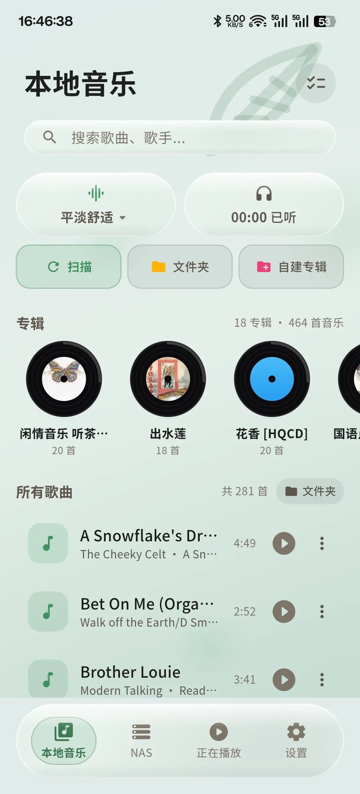
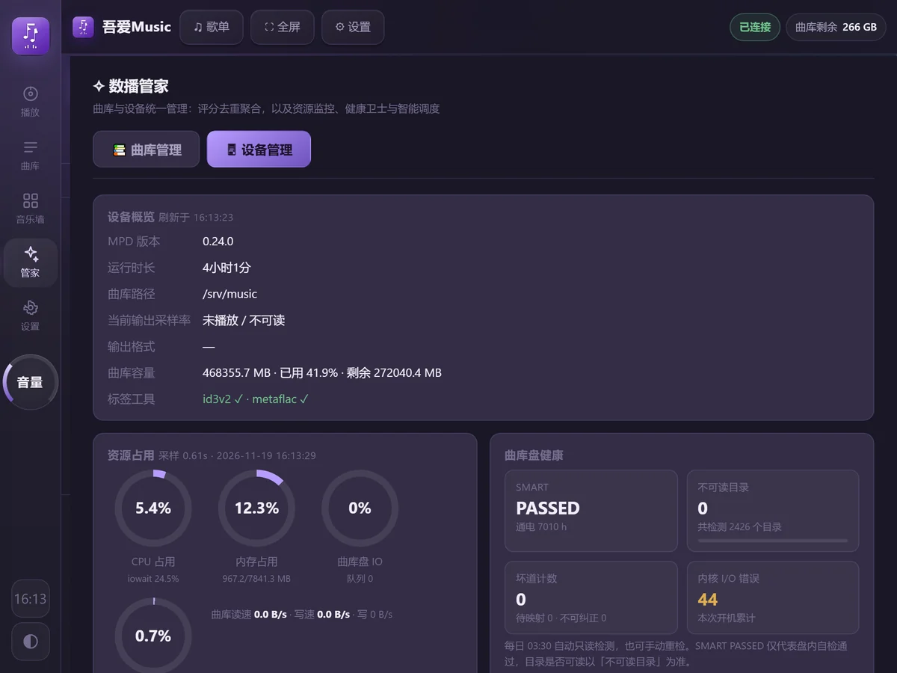
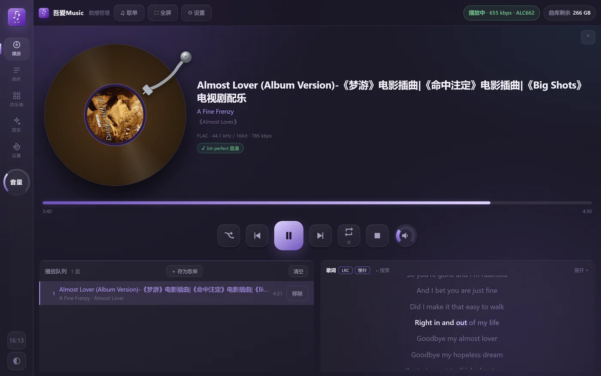

本地音乐，不该被绑在手机上
曲库放在机器里，播放交给专用链路。手机只负责选歌和看歌词，关掉屏幕音乐照常走。
曲库留在本地
机械盘装歌，系统盘跑服务。SMB 直连拷歌，Web 文件管理、NAS 导入、回收站都在同一页。
声音走直路
MPD 0.24.4 加 mixer_type none，默认不重采样、不用软件音量。接 DDC 后可走数字口到功放。
一页管完全部
手机用吾爱音乐 App 直接控制播放；平板、电脑浏览器打开管理页，曲库、设备、网络、系统设置集中在一处。
一台数播该有的，都在这里
播放、曲库、封面、设备管理与授权售后全部做进同一页。下面每一项都已在参考机上跑通；硬件做不到的，规格表里直说。
播放与音质
- MPD 0.24.4 + mixer_type none，默认 bit-perfect 直出，不走系统重采样与软件音量
- 重采样开关与升频目标：关 / 88.2 / 96 / 176.4 / 192 kHz，输出位深 16 / 24 bit
- ReplayGain（关 / 曲目 / 专辑）、无缝播放、交叉淡化 2–10 秒
- soxr 品质档位与 DSD→PCM 目标可调；播放中实时显示码率、输出设备与链路标注
- 左右平衡、极性、输出电平与 FIR 走 CamillaDSP，明确标注非 bit-perfect
曲库与内容
- 机械盘本地曲库 + SMB 共享，Web 文件管理、NAS 导入、回收站都在一页
- 音乐墙按专辑浏览，格式筛选，点专辑直接播放或追加队列
- 逐字歌词高亮；本地 LRC 自动升级为逐字时间轴，歌名与歌词不合时小光会提醒核对
- AI 合成歌词：可选千问 / 火山引擎 / DeepSeek，填入自己的 API Key 即可生成；只传歌曲信息、不上传音频，结果仅写本地缓存
- 封面四源刮削（网易云 / QQ / 酷我 / Apple Music），可手动换图，本地缓存 90 天
- 中文路径、GB18030 / Big5 / Shift-JIS 全链路兼容
设备与自动化
- 八分区设置中心：音频 / 播放 / 设备 / 网络 / 曲库 / AI 歌词 / 界面 / 系统
- 自动待机、定时开机（RTC）、曲库机械盘休眠、极致聆听模式
- 沉浸舞台：星环与动态背景、5 档亮度、自动全屏、逐字歌词效果
- 简中 / 繁中 / 英 / 日 / 韩五语界面，即时切换不动歌词与文件名
- 感知音量曲线：UI 30% ≈ ALSA 55%，解决线性刻度前段无声
- 恢复出厂需设备密码，3 次错误锁 5 分钟；保留曲库 / 网络 / SSH / 缓存
- 可选小爱语音 / 巴法云通道播放控制，不依赖公网端口或内网穿透
连接与授权
- 手机用吾爱音乐 App 局域网发现并直控数播；平板 / 电脑浏览器打开管理页做专业设置
- 硬件 ID 随主板、全部物理网卡、内置盘、CPU 与内存变化
- 对接自有授权平台 license.52ta.top，便于激活绑定与售后追溯
- 曲库盘 SMART 健康巡检、资源占用与内核 I/O 错误统计，管家页一屏可见
会陪你听，也会替你照看曲库
小光跑在机器本地：纯标准库神经网络与声纹索引都在本机，权重只写侧车文件。它给建议、也会动手，但每一步都能在「运行日志」里看到。
十境调音，越用越懂你
- 本地神经网络 v2 给出十境连续增益建议，一键应用，不再只是预设档位
- 点「满意 / 不满意」回传反馈，命中率与学习条数在界面可见
- 90 秒内手动改动记为隐式负样本，学会你的偏好而不是覆盖你
- 链路不支持的能力自动规避，例如当前同轴链路下禁用无效的 DSD 设置
声纹核对，歌名不再靠猜
- 本地 Chromaprint 指纹建库，SQLite 侧车存储，全程不联网
- 倒排索引 + 偏移投票 + 逐位比对，置信度达阈值才提醒
- 歌名写错、文件被替换、同一首换成别的录音，小光会告诉你真实曲目
- 只在库内比对；库外歌曲回退到元数据，不冒充在线识别服务
歌词与曲库，有人替你守着
- 独唱曲目自动剔除合唱版歌词，避免张冠李戴
- 本地 LRC 主动升级逐字时间轴；波形校验发现错位会即时修正
- 导入歌曲时实时监控：格式族、DSD、乱码、体积与同名歌词一屏可见
- 播放中有陪伴动作，给建议时会让位，不跟调音抢注意力
可监督的自治
- 所有判断写进「运行日志」，来源、原因与结果都能追溯
- 不改音频标签、不覆盖用户曲库文件；生成内容只进本地缓存
- 自动调音可关闭，开关在设置里；默认均衡，不会擅自大改声音
参数摊开写，能力不靠形容词
下面每一条都能在参考机的设置页里逐项核对。调音不是几档预设音效，而是能落到频点、Q 值与增益上限的真实滤波器；信号链也不靠播放器自报，靠 ALSA 实测。
十境调音 · 逐段参数
| 境 | 听感维度 | 滤波类型 | 中心频点 | Q / 斜率 | 增益上限 |
|---|---|---|---|---|---|
| 晨昏 | 整体冷暖 | tilt 双搁架 | 180 / 6000 Hz | 0.707 | ±6 dB |
| 深潜 | 极低频下潜 | lowshelf | 70 Hz | 0.707 | ±10 dB |
| 回弹 | 低频速度与弹性 | peaking | 110 Hz | 1.0 | ±10 dB |
| 肌理 | 声音饱满厚薄 | peaking | 220 Hz | 0.7 | ±10 dB |
| 唱腔 | 人声前后距离 | peaking | 650 Hz | 0.4 | ±8 dB |
| 圆润 | 女声甜润去毛刺 | peaking | 3000 Hz | 4.0 | ±8 dB |
| 顺滑 | 中高频齿音柔化 | peaking | 5800 Hz | 1.5 | ±8 dB |
| 起落 | 瞬态软硬快慢 | peaking | 7500 Hz | 0.4 | ±8 dB |
| 清亮 | 高频亮泽不刺 | peaking | 9200 Hz | 1.5 | ±8 dB |
| 天光 | 高频延伸与空间 | highshelf | 10000 Hz | 0.707 | ±10 dB |
每境滑块 −100 ～ +100 线性映射到增益上限，中位 ±0.5 以内不插入滤波器。六组预设：平直 / 人声 / 低频 / 明亮 / 温暖 / 现场。切到「专业模式」即变为 32、64、125、250、500、1k、2k、4k、8k、16k Hz 十段等距参量 EQ，Q 固定 1.41。
DSP 处理链 · 不只是十境
◈FIR 房间校正
- Conv 卷积滤波，导入自己的 .wav 脉冲响应，置于整条链路最前端
- 左右平衡 −100 ～ +100，左右声道各自独立极性反转
- 输出电平 0 / −3 / −6 / −12 dB 档位，后端可微调至 −24 dB
- 耳机交叉馈送 0～100（对侧掺入 0～0.45），50/15 μs 去加重，单声道混合
- 改参数走 CamillaDSP WebSocket 热加载，调音不断声
↻重采样与输出
- 8 档目标：auto / 关 / 44.1 / 48 / 88.2 / 96 / 176.4 / 192 kHz，位深 16 / 24 bit
- soxr 品质三档：标准 / 高（默认）/ 极高；DSD→PCM 目标可调
- ReplayGain：关（默认，守 bit-perfect）/ 曲目 / 专辑；交叉淡化 0～12 秒
- mixer_type none，auto_resample / auto_format / auto_channels 全关，软件音量不插手
- 链路 5 档：auto / USB DAC / DDC 同轴 / 模拟 / HDMI，auto 按链路自动定档
✓信号链自检
- 只读 ALSA hw_params 实测判定，读不到一律标「待验证」，不冒充直通
- 八态判定：直通 / 原生 DSD / DoP / DSD 转 PCM / 重采样 / 降混 / 待验证 / 空闲
- 测试音 −22 dBFS、1 kHz 正弦，六档采样率逐档播，测完自动恢复原进度
- HDMI 读 EDID / ELD：14 种编码、采样率、位深、声道与厂商码；同轴不猜末端型号
- 输出指纹 + 输出档案记住设备的实测结论，可导出可复现的链路报告
工程底座 · 看不见但撑得住
说明：参数取自参考机当前配置与源码，可按合作需求调整；DSD 能否原生直出取决于末端设备能力，本机实测链路（同轴 → 有源箱）只走 PCM，官网不做无法兑现的承诺。
不画效果图，直接看真机
手机端是吾爱音乐 App 直接控制数播的真机画面；平板与桌面是浏览器管理页。全部为实机截图，未用设计稿替代。





手机图为吾爱音乐 App 真机界面，平板与桌面为参考机浏览器管理页；均未用设计稿替代，专辑与封面仅作界面演示。
声音怎么走，页面就怎么标
源格式与实际输出分开显示。采样率不一致就是重采样，多声道变两声道就是降混，不把转换说成直通。
板载 ALC662 不支持 DSD Native / DoP 与 MQA；需要原生位流请配支持 DoP 的 USB DAC。
和成熟数播比，差在哪、强在哪
选三款公开规格可查的主流机型，只比官方写明的硬指标与功能边界；听感不做纸面判断。横向滑动可看完整表格。
| 维度 | 吾爱Music 数播（T1S 参考机） | Bluesound NODE | Cambridge Audio MXN10 | WiiM Ultra |
|---|---|---|---|---|
| 产品定位 | 本地曲库方案验证机参考机 / 非量产商品 | 成熟商业流媒体播放器BluOS 多房间生态 | 紧凑型网络播放器StreamMagic 平台 | 带屏数字音乐中枢3.5 英寸触屏 + 前级 |
| 解码 / 输出 | ALC662，192 kHz / 24 bit，2 声道可加 USB DDC 走同轴；无内置高端 DAC | 32 bit / 384 kHz DAC原生采样率至 192 kHz / 24 bit，DSD256 | ESS ES9033Q最高 768 kHz / 32 bit PCM，DSD512 | ESS ES9038Q2M最高 192 kHz / 24 bit，数字输出 bit-perfect |
| 本地曲库管理 | SMB + Web 文件管理 + NAS 导入 + 回收站音乐墙按专辑浏览，实测 502 张 / 886 首 | USB 盘 + SMB 索引官方标称最多 200,000 首 | USB 媒体 + UPnP / DLNAStreamMagic 管理专辑与歌单 | USB 存储（FAT32 / NTFS / EXT4）可给 DLNA 设备做媒体服务器 |
| 歌词 / 封面 | 逐字歌词 + 四源封面刮削 + AI 合成歌词自带 API Key，不上传音频；本地缓存，可手动换图 | 专辑封面 JPG / PNG官方规格未标注多源刮削 | App 内专辑封面浏览官方规格未标注多源刮削 | 触屏显示封面与小组件官方规格未标注多源刮削 |
| 音效 / 调节 | 重采样 / ReplayGain / 交叉淡化 / DSP 平衡极性 / FIR / 十境连续调节小光给建议并一键应用，反馈成长；八分区设置 | BluOS 均衡器 / Dirac Live Ready多音箱与低音炮管理 | 7 段 EQ多房间同步 | 10 段图示 + 参数 EQ / RoomFit24 组预设、房间校正 |
| 生态 / 多房间 | 手机用吾爱音乐 App 直控，平板 / 电脑浏览器做专业设置小光 AI 管家本地值守；可选小爱语音；不接主流流媒体订阅 | AirPlay 2 / Spotify / TIDAL / Qobuz / RoonBluOS 最多 64 个播放器同步 | AirPlay 2 / Chromecast / Spotify / TIDAL / Qobuz / RoonStreamMagic 多房间 | Google Cast / DLNA / Spotify / TIDAL / RoonWiiM 生态多房间；官方标注不支持 AirPlay 2 |
| 设备识别 / 授权 | 硬件 ID 随配件变化可绑定 license.52ta.top 做激活与售后 | 官方规格未标注— | 官方规格未标注— | 官方规格未标注— |
对比参数取自各品牌官方页面 / 用户手册（2026-11-19 查询）： Bluesound NODE · Cambridge Audio MXN10 · WiiM Ultra 用户手册。 型号与固件会迭代，购买前请以官方最新规格为准；这里不比较听感，也不把参考机说成量产商品。
实机参数，照单写明
以下为当前 T1S 参考机实测配置，可按合作需求调整机箱、存储、声卡与屏幕。
| 平台 | TOPFEEL T1S / BYT30；Debian 13 (trixie) |
|---|---|
| 处理器 | Intel Celeron J1900 @ 1.99 GHz，4 核 |
| 内存 / 系统盘 | 8 GB / KINGBANK KM100 120 GB |
| 曲库盘 | HGST HTS545050A7E380 500 GB 2.5 英寸机械盘，实测 886 首 / 502 张专辑 / 239 位艺人 |
| 声卡 | 板载 Realtek ALC662（最高 192 kHz / 24 bit，双声道）；可加 USB DDC，参考机实测接 SMSL PO100 Pro 走同轴 |
| 网络 | 板载有线 ×3 + WiFi（参考机当前 WiFi 在线） |
| 显示 | 无屏无背光；可选 HDMI 接屏进入本地管理界面 |
| 管理方式 | 手机用吾爱音乐 App 局域网直控；平板 / 电脑浏览器访问 8080 端口做专业设置 |
| 硬件 ID | WUAI-XXXX-XXXX-XXXX-XXXX，换配件跟随变化 |
| 不支持 | DSD Native / DoP、MQA、屏幕亮度、网口 LED（受当前硬件限制） |
数播自己也在持续进化
这里记录的是数播参考机的功能迭代与真机跑通状态，不是 App 的发版清单；研发成果来自工作室公开的音频白皮书。
想做一台自己的数播？
整机贴牌、渠道供货、特定屏幕与遥控器适配、DLNA 接入或 DSP 定制，都可以从一次咨询开始。这里不提供安装包，我们更想聊硬件与合作。
留个手机号，直接拉起咨询
填上手机号（用于我们回拨联系），再点微信或 QQ：会先把联系方式复制到剪贴板，并拉起对应应用。手机号只留在你自己设备上，本站不上传、不保存。